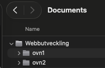

Modul 1
Kap 1.2 - Kom igång med VS Code och projektmappar
En bra arbetsmapp gör att webbsidan fungerar lokalt, i skolan och när den publiceras.
Mål
- Installera Visual Studio Code på din dator.
- Installera tillägg som gör arbetet med HTML och CSS enklare.
- Skapa en tydlig projektmapp för en webbplats.
- Förstå varför filnamn, filändelser och relativa sökvägar spelar roll.
- Använda dokumentation, forum och AI på ett ansvarsfullt sätt.
VS Code
Visual Studio Code är en kodredigerare. I kursen använder du den för HTML, CSS och senare JavaScript. Installera programmet från code.visualstudio.com om det inte redan finns på datorn.
Praktiska tillägg är Live Server, W3C Web Validator, ett tydligt färgtema, ett ikontema och gärna
image preview. Emmet är inbyggt i VS Code och kan skapa grundkod snabbt. Om du skriver
! i en HTML-fil och trycker Tab skapas en enkel HTML-mall.
Installera VS Code
- Öppna en webbläsare och gå till code.visualstudio.com.
- Klicka på nedladdningsknappen. Sidan brukar känna av om du använder Windows, macOS eller Linux.
- Öppna den nedladdade filen och följ stegen för ditt operativsystem.
- Starta VS Code när installationen är klar.
- Windows: öppna den nedladdade
.exe-filen och följ installationsguiden. - macOS: öppna
.dmg-filen och dra Visual Studio Code till mappen Applications. - Linux: använd installationsfilen för din distribution, till exempel en
.deb-fil på Debian eller Ubuntu.
Om en knapp, text eller dialogruta ser lite annorlunda ut än i en film eller bild är det normalt. Program och webbsidor uppdateras ofta.
Installera tillägg i VS Code
Tillägg installeras från Extensions i vänsterspalten i VS Code. Ikonen ser ut som små block. Sök efter tilläggets namn och klicka på Install.
- Live Server: öppnar projektet i webbläsaren och laddar om sidan när du sparar.
- W3C Web Validator: hjälper dig att hitta HTML-fel och kontrollera att koden följer standarder.
- Color Highlight: visar färger direkt i CSS-koden.
- Image Preview: visar en liten förhandsvisning av bilder som används i koden.
- Color theme: ändrar färgtema i VS Code så att editorn blir lättare att läsa.
- Icon theme: ger olika filtyper tydligare ikoner i filträdet.
Starta gärna om VS Code efter att du installerat flera tillägg. Det behövs inte alltid, men det kan lösa små problem om ett tillägg inte syns direkt.
Kontrollera att allt fungerar
När VS Code och tilläggen är installerade kan du göra ett snabbt test.
- Skapa en ny projektmapp, till exempel
test-webb. - Öppna mappen i VS Code med File och Open Folder.
- Skapa filerna
index.htmlochstyles.css. - Öppna
index.html, skriv!och tryck på Tab. Då skapar Emmet en grundmall för HTML. - Lägg till text i
body, till exempel<p>Hello World!</p>. - Koppla CSS-filen i
headmed<link rel="stylesheet" href="styles.css">. - Skriv några CSS-regler i
styles.cssoch spara. - Starta Live Server och kontrollera att sidan öppnas i webbläsaren.
Vad betyder 127.0.0.1:5500?
När du startar Live Server kan webbläsaren visa en adress som http://127.0.0.1:5500/index.html.
127.0.0.1betyder din egen dator. Det är inte en sida ute på internet.5500är porten som Live Server använder för att visa projektet.index.htmlär filen som visas i webbläsaren.
Du kan ibland se localhost:5500 i stället. Det betyder i praktiken samma sak: webbläsaren tittar på en lokal webbserver på din dator.
body {
background-color: aqua;
}
p {
color: darkblue;
}Projektmapp
Skapa en mapp för varje webbplats. Lägg HTML-filen i mappen och skapa undermappar för sådant som bilder och CSS när projektet växer.
profil-sida/
index.html
styles.css
images/
profilbild.jpgSamla dina webbutvecklingsprojekt
Det är viktigt att samla alla webbutvecklingsprojekt i en gemensam mapp som är lätt att hitta på datorn. Då vet du alltid var dina HTML-, CSS- och bildfiler ligger, och det blir enklare att öppna rätt projekt i VS Code.
På Mac rekommenderar jag att du skapar mappen Dokument/webbutveckling. I den mappen kan varje uppgift få en egen projektmapp, till exempel profil-sida, kontaktformular och responsiv-startsida.

Filnamn
Använd små bokstäver, siffror och bindestreck. Undvik å, ä, ö, mellanslag och specialtecken i fil-
och mappnamn. Namn som min-profil.html och profilbild.jpg är lättare att
hantera än Min Profilbild 1.JPG.
En startsida bör heta index.html. Många webbservrar letar automatiskt efter just det
filnamnet.
Relativa sökvägar
En relativ sökväg utgår från filen du skriver i. Om styles.css ligger i samma mapp som
index.html skriver du:
<link rel="stylesheet" href="styles.css">Om bilden ligger i mappen images skriver du:
<img src="images/profilbild.jpg" alt="Porträttbild">Engelska och hjälp
Mycket kod, dokumentation och hjälpresurser är på engelska. Träna därför på engelska begrepp som element, attribute, browser, inspect, file, folder, error och warning.
Bra källor är MDN, W3Schools, WHATWG/W3C och Can I Use. Forum som Stack Overflow kan hjälpa dig se hur andra löst liknande problem. AI-verktyg kan ge förslag, men du behöver alltid testa, förstå och kontrollera koden själv.
Prova själv
- Installera VS Code om det inte redan finns på datorn.
- Installera minst Live Server och W3C Web Validator.
- Skapa mappen
profil-sida. - Öppna mappen i VS Code med File och Open Folder.
- Skapa
index.html,styles.cssoch mappenimages. - Skriv
!iindex.htmloch tryck Tab för att skapa en HTML-mall. - Starta Live Server och kontrollera att webbläsaren öppnar rätt fil.
Sammanfattning
- VS Code installeras från
code.visualstudio.com. - Extensions i VS Code används för att installera tillägg.
- Live Server och W3C Web Validator är bra tillägg i början av kursen.
- En webbplats börjar med en tydlig projektmapp.
index.htmlär standardnamnet för startsidan.- Relativa sökvägar kopplar ihop filer i projektet.
- Dokumentation och felmeddelanden är ofta på engelska.
- AI kan hjälpa, men du ansvarar för att koden fungerar.